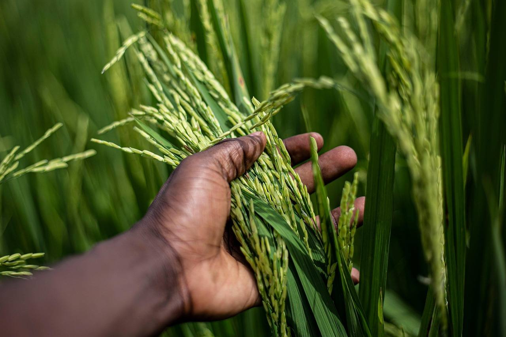
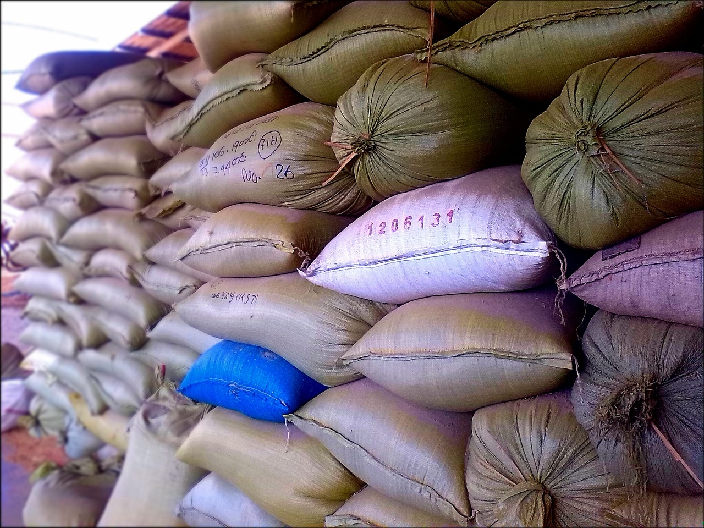

01
Length
1121 is extra-long. B-1 is broken. We do not print one as the other.
Jandiala Road, Jhabran
The mill. Packs leave as Ziyarat and Sultan.
Who we are
Saith Hanif Rice Mills is the organisation on Jandiala Road, Jhabran, Punjab. Ziyarat and Sultan are the mill’s two product brands.
Ziyarat — Kainat Steam 1121, Kainat Sella 1121, Classic Basmati Sella, Classic Basmati Steam, Basmati, Short Grain, B-1 broken, and Awami.
Sultan — Kainat Basmati Sella and Short Grain.
زیارت · سلطان

Paddy before the millOn the floor
1121 is extra-long. B-1 is broken. We do not print one as the other.
Sortex. The bag says sootys clean — stones and sooty grain stay out.
Written at intake and again at pack. Wet lots are dried first.
Saith Hanif Rice Mills and the mill phones are on the sack.

Packed and stackedThe place
The mill is on Jandiala Road, Jhabran, Punjab. That is the Google Maps pin. Visits by appointment. Bring a sample of what you sell now if you want it cooked next to ours.